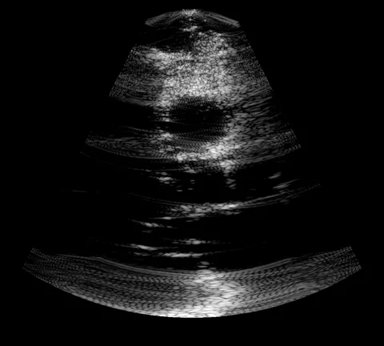
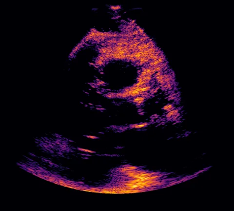
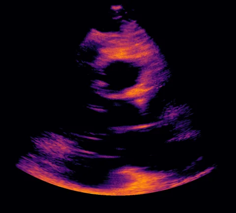

Recovering the multistatic data set with a generative prior
Eindhoven University of Technology
Department of Electrical Engineering
Below is a visualization of 8 slices of the multistatic data set and the B-mode. Watch as the model transports random noise to a coherent multistatic data set across diffusion time steps.
With a good prior, we can push subsampling to extremes. Try moving the slider to the left for a few transmit types.
16 of 80
Here we use 32 focused beams. The model is quite good at denoising, but we find that in extreme low-SNR cases it might remove small parts of tissue.
The posterior variance aligns with the loss with respect to the multistatic ground truth, showing epistemic uncertainty!



In vivo multistatic datasets are hard to obtain, so the model was only trained on noiseless point-scatterer simulations. The model also does not have access to any temporal context window and it has never seen harmonic imaging or even this transmit frequency. Still, hallucinations are minimal and speckle is surprisingly coherent.
@article{penninga2026refocus,
title = {TODO},
author = {Penninga, Simon and van Sloun, Ruud J. G.},
journal = {TODO},
year = {2026}
}